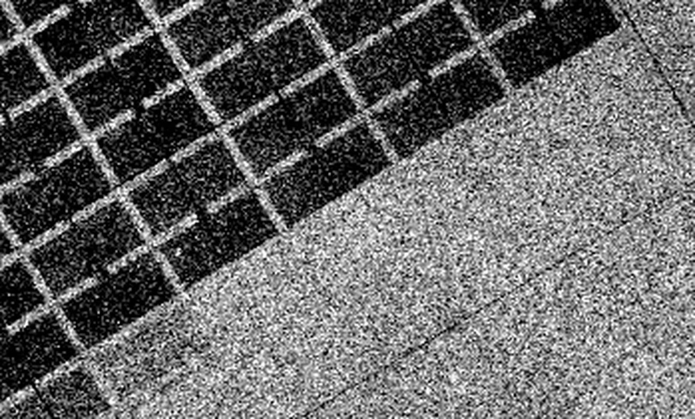
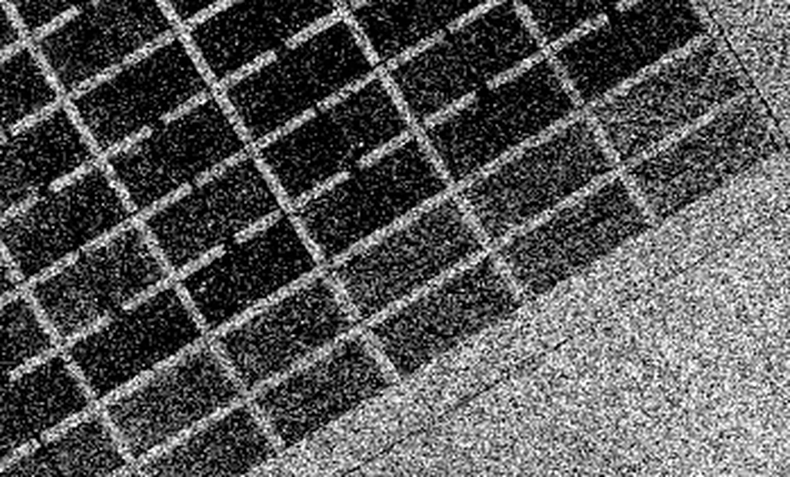
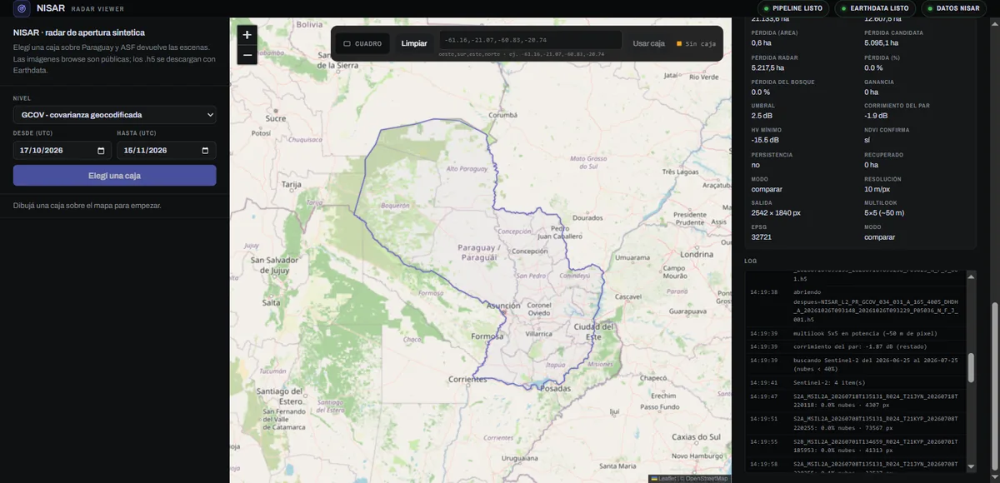
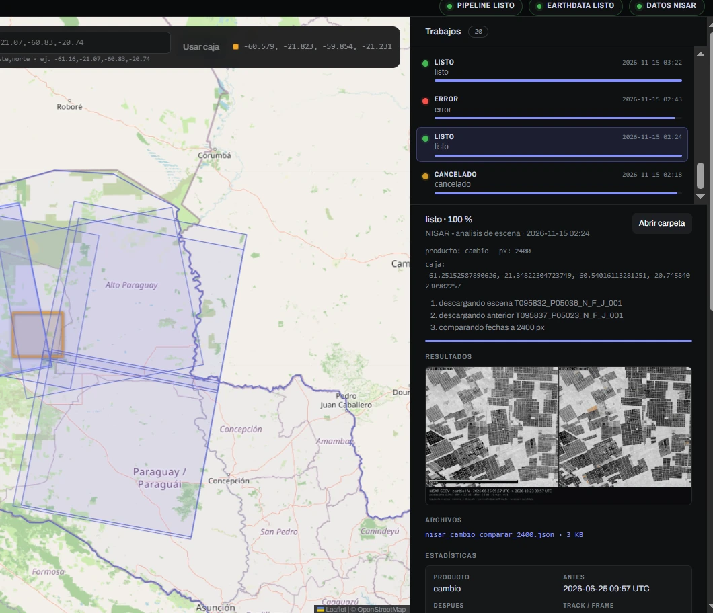
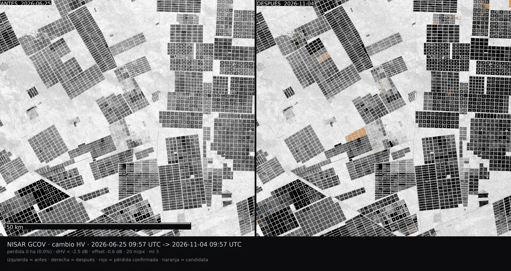
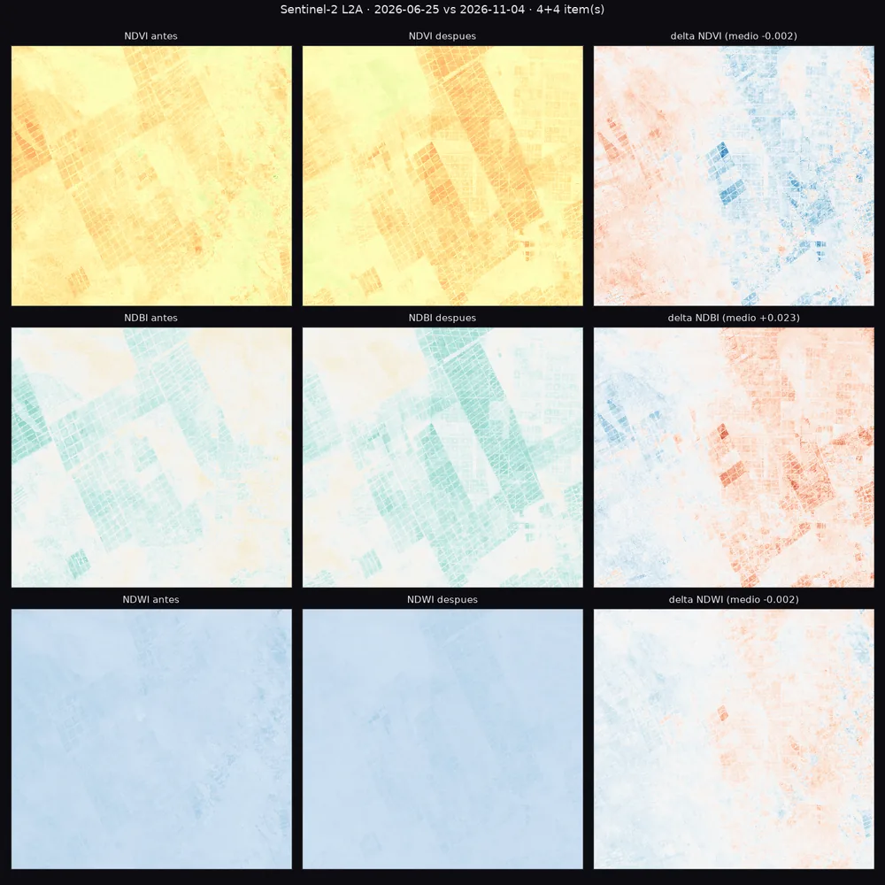
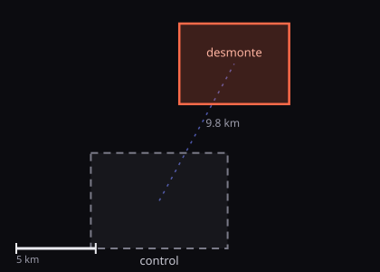
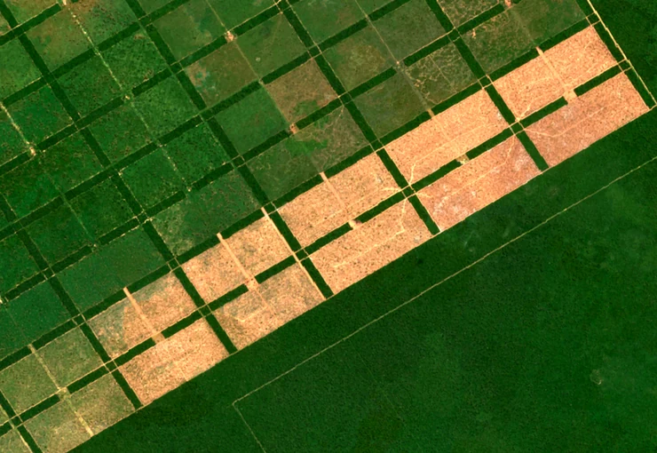

Ilustración: el radar mira a través de la nube. No es una imagen de NISAR.La consola, con una caja sobre el Chaco y el historial de corridas.Producto, par de fechas, modo y umbrales: el plan de la corrida.


20 ene21 mar
Arrastrá la línea: el mismo encuadre antes y después.

Las columnas de la corrida y el registro con marca de tiempo de cada paso.

La consola: cada trabajo con su estado y la comparación antes y después como resultado.


Cambio de HV y los índices ópticos sobre la misma caja, entre junio y noviembre de 2026.
El problema
La deforestación ocurre cuando no se ve
En el Chaco, la temporada de lluvias tapa el bosque justo cuando avanza la deforestación. La
ventana óptica se cierra durante meses, y con ella el monitoreo.
Armar una imagen limpia con Sentinel-2 en enero costó doce escenas por fecha.
Qué es
Una consola abierta para la misión NISAR
Dibujás una caja sobre el mapa, elegís dos fechas y la consola devuelve el cambio medido
sobre esas imágenes. Corre en local o en Docker, y el código es abierto.
3familias de producto: cobertura, humedad, interferometría
Cómo funciona
Panel de Hiperparámetros
Busca las escenas que cruzan la caja, elige el par de fechas y ejecuta el análisis.
Queda el PNG, el GeoTIFF, el JSON y el plan exacto de comandos.
la caja
el par de fechas
el análisis
el comprobante
Qué encuentra
262,9 hectáreas contra 2,1
Mismo par de imágenes, mismo umbral. La deforestación pierde 262,9 ha; el bosque intacto a
9,8 km pierde 2,1.

La deforestación y la zona de control, a 9,8 km.

22 ene27 mar
La misma caja en Sentinel-2, antes y después.
Por qué confiar
Verificación de Datos
Control pareado, barrido de umbral, ventanas de doce días y el óptico sobre la misma
grilla. El rojo es pérdida que el radar vio y el NDVI confirmó.
45tests sin red, y el plan de comandos de cada corrida
A quién le sirve
Días de trabajo en un solo flujo
Hoy medir la deforestación es bajar dos gigas, alinear grillas a mano y repetir todo para la
otra fecha. La cifra le sirve a INFONA, a MADES, a municipios y a universidades.
1,8 GB por escena, y dos escenas por comparación.
Hasta dónde
El radar ya ve de noche y con nubes
Falta validación en campo, corrección por ángulo de incidencia y un flujo con alertas.
La misma señal sirve para inundaciones, incendios y humedad del suelo.
Lo que falta es que la cifra llegue a tiempo a quien decide.